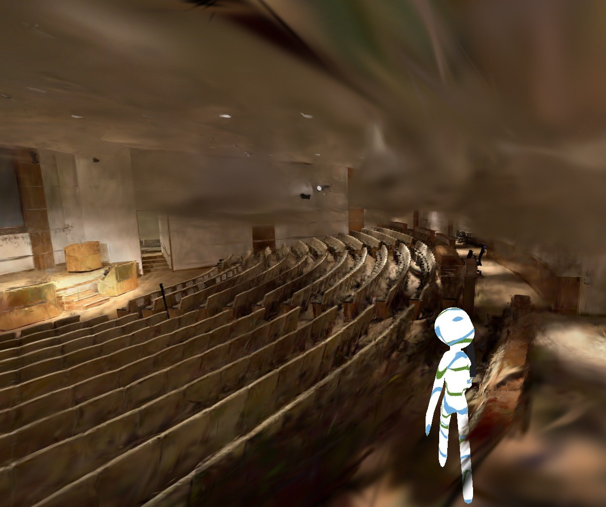
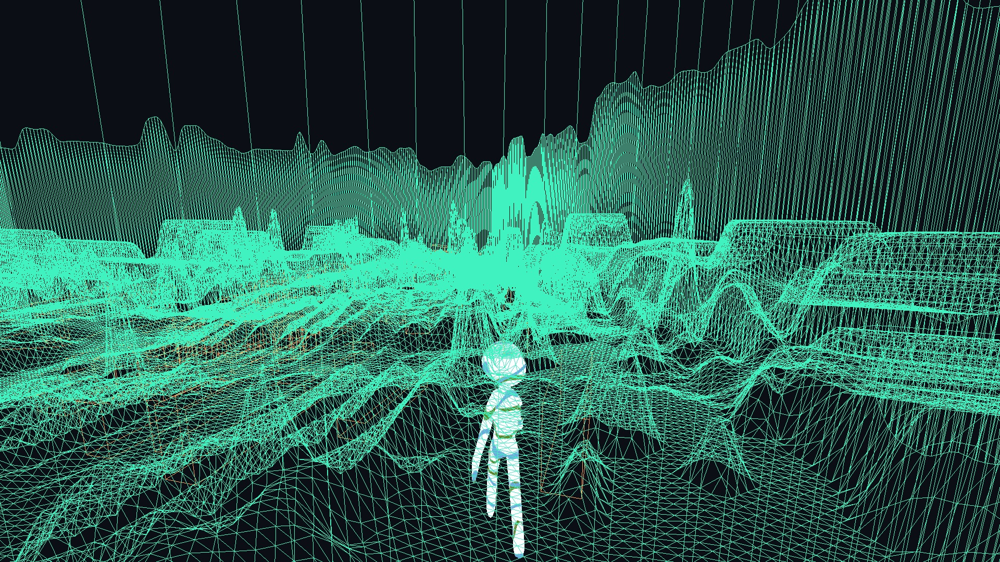
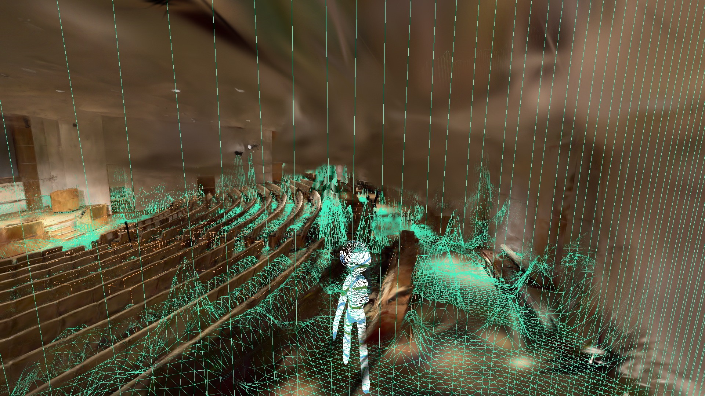
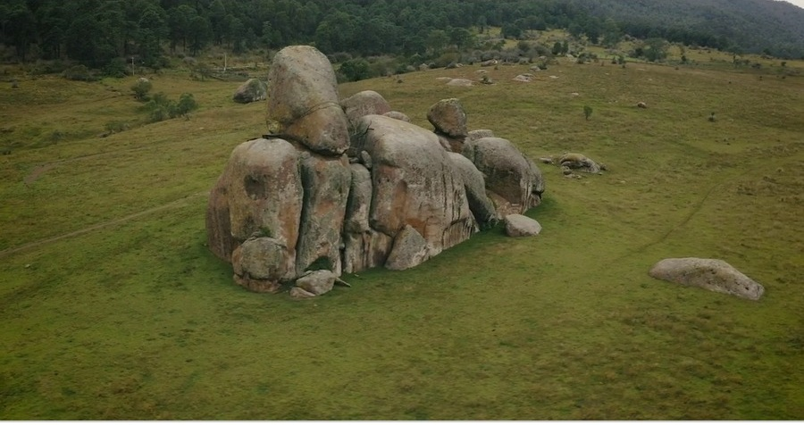
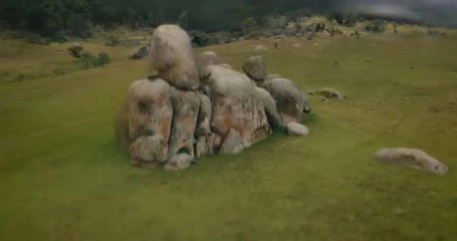

Any video of a place,
turned into a place
you can walk inside.
One command on a laptop. No settings to tune. It does not stop at a pretty render. It hands back a room with a floor that holds you, walls that stop you, and a machine-checked proof that you can get from one end to the other.
We film the whole world now. We can barely use a single minute of it.
Cameras, software and compute all crossed a threshold at once. The bottleneck moved, and it is not where the industry is spending.
A drone crosses a site in eight minutes. A phone walks an apartment in ninety seconds. The camera everyone already owns is a survey instrument.
Turning footage into a 3D model still means a specialist, a workstation, and a wall of settings re-guessed for every new scene. It fails quietly, and it fails differently each time.
A model nobody can open is not an asset. Almost every reconstruction dies as a file on a drive, because the person who needs it has no way to stand inside it.
A beautiful point cloud is not a place.
Every consumer scanner and every research demo optimises one thing: how the render looks from the camera it was trained on. Four things break the moment a person has to be inside it.

What a scanner gives you: a surface you cannot stand on.
There is no floor you can trust
A cloud of light samples has no underside and no inside. Walkers fall through it or stand on air, and nothing in the file says which way is down.
There is no metre
Reconstruction from images recovers shape up to an unknown scale. A corridor can come out four centimetres long or four hundred, so nothing you measure is real until that is pinned.
Nobody checks the claim
Quality scores measure pixels against photographs. A scene can score well and still be impossible to cross. No tool in this market reports that.
Every scene needs new settings
The knobs are tuned by hand, per site, by someone who has done it before. That is a consultancy, not a product. It does not scale and it does not repeat.
Video in. A walkable world out. Fifteen steps, no hands on the wheel.
You point a camera at a place and run one command. The system diagnoses the footage, chooses its own settings, builds the model, gives it physics, then sends a character through the result to check that the place is real enough to walk.
Read the footage
- Keeps the sharpest frames, drops the blurred ones
- Uses the phone's recorded positions when present
- Reads the real lens instead of guessing it
Solve the cameras
- Works out where every frame was shot from
- Fuses separate clips into one space
- A failed solve climbs a rescue ladder, not a crash
Train the model
- Fits millions of 3D light samples to the photos
- Sizes the job to memory free at that moment
- Checkpoints, so a killed run still ships something
Give it physics
- Finds which way is up and what a metre is
- Builds a solid shell you can stand on
- Chooses the ground by measurement, not by rule
Prove it walks
- Thirteen rules the world has to pass
- A pilot character is driven through it unattended
- Rebuilds are set against the real photographs
Third-person walking with real collisions. No plug-in and no install for the person viewing it.
A collision mesh of the actual room, plus boxes for the furniture inside it.
A height map in real metres, so distances and clearances mean something.
Every step timed, every failure named, every verdict written down.
Four problems that only appear when you insist on a walker.
A reconstruction has no metre
We recover scale from physics instead of asking the operator. A drone holds roughly five metres a second. A hand holding a phone sits about 1.6 metres above the floor. Those two facts, read off the solved cameras, pin the world to centimetres.
Light samples are not surfaces
So we build a solid shell underneath them, voxel by voxel, where every change in height becomes a vertical wall. A body 34 centimetres wide cannot climb a 35 centimetre step at all. Walkability stops being an opinion and becomes a routing question.
The truth depends on the machine
The same clip yields 7,500 or 30,000 model elements depending on what else is using the graphics card. So no check downstream counts anything. Every threshold is a share of the cloud, a spread across the camera path, or the scene's own size.
A number can be right while the claim is wrong
"Walked 22 metres, zero falls" reads perfectly while the character drifts an inch above the floor. So we log a sampled route and cross-check it against the distance reported. That is how we caught our own test lying to us.
We do not render a picture of a room.
We build the floor of it.
The reconstruction gives you a photograph you can orbit. What we add underneath it is a solid shell with an inside and an outside, generated from the model and checked against the ground we measured.
We build the floor two ways, drive the pilot character on both, and ship whichever it walks further across. In our own scenes the winner flips: 68 metres against 51 in a hall, 69 against 94 in a rock field. No statistic predicts it, so the walk is the judge.
Desks, seats and bins get their own boxes, so the walker is stopped by what should stop it rather than sliding through a wall of light.
Where can a person stand, how far is it to the exit, what blocks the view of the damage. Those become measurements instead of arguments.

Nothing is tuned per scene. Everything is measured.
The classic failure mode of this whole field is a run that dies for no reason until an expert changes three numbers. We treated that as the defect, not the workflow.
One command diagnoses motion, blur and how much of the clip is pure rotation, then picks one of nine capture profiles. A recorded phone position log counts as proof a person walked it, so a living-room orbit is never sent down the aerial pipeline and handed a ceiling that is actually a floor.
| Profile | What it assumes about the walk |
|---|---|
| Handheld indoor room or flat | Arcs and orbits at three heights |
| Large indoor: halls, warehouses | Serpentine grid with cross passes |
| Outdoor building or facade | Circle the structure at several levels |
| Aerial drone orbit or push-forward | Continuous orbits at steady speed |
| Drone nadir and terrain mapping | Lawnmower pattern, 75% forward overlap |
| Linear street or long hallway | Forward path, corners held longer |
| Close-up object, turntable | Two elevation rings around one thing |
Seven of nine shown. The remaining two: automatic, and bright open sky.
Pixel count is decided before anything else, from what the graphics card has spare at that second.
The element cap follows, and the image cache decides whether it stays resident or has to stream.
The grid coarsens until the room's own footprint fits inside what the builder can hold.
Out of memory, grid overflow, unsupported option, hard kill. Repairable ones are repaired and recorded.
A new fixed number has to argue why it cannot be measured. If it can be, it is. That rule is most of the reliability.
Thirty-nine minutes, top to bottom, on a six-gigabyte laptop.
| Step | What it decides | Time |
|---|---|---|
| Read the footage | Sharpest frames, blur floor, duplicates | 28s |
| Import phone positions | Real metric anchors for the solve | 0.3s |
| Solve where every camera was | 480 of 487 frames registered | 19m 50s |
| Train the model | 486,474 light samples fitted | 15m 18s |
| Find up, the metre, the room | Gravity and scale from the cameras | 4.8s |
| Export viewer assets | Reoriented, pruned, in metres | 16.0s |
| Paint the ground colours | Underlay beneath the model | 0.5s |
| Build the collision shell | Solid surface from the cloud | 3.5s |
| Make furniture solid | Boxes that stop the walker | 0.5s |
| Choose the ground by measurement | Two candidates raced, better one ships | 3.6s |
| Run the thirteen-rule gate | Is this a world we would hand over | 0.4s |
| Render comparison views | Rebuilds from the original cameras | 6.1s |
| Assemble the blind comparison set | Photo against rebuild, order hidden | 1.0s |
| Drive the pilot walk | Unattended character, logged twice a second | 3m 17s |
| Total | Fifteen steps, no settings changed by hand | 39m 32s |
Camera solving and training dominate everything. The physics and verification layer costs about 26 seconds a scene.
A different room, same machine, same single command. Both runs completed all fifteen steps.
These are the only two complete timed runs recorded so far, both on indoor phone footage. Larger sites take longer. We show the number because it is measured, not because it is impressive yet.
The build refuses to ship a world it does not trust.
After fifteen steps, thirteen rules decide whether the result is certified. The strict ones are never relaxed to make a run look green. Two of our ten scenes were turned away by them, including the drone shot we use in the demo.
Seven further rules grade quality rather than safety: how much of the ground was measured against inferred, whether the cameras sat above the surface they filmed, how flat the start point is, and whether the shell drifts from the ground we mapped.
A pipeline that never fails is usually a pipeline that never checks. Ours loses a quarter of its own work on purpose.
Passed every strict rule and shipped
Usable, with the limit stated on the record
The world exists. The gate said it is not safe to hand over.
Both refusals are the same rule: the pilot character would start somewhere the ground does not support it. That is precisely the defect a client would find first.
Same camera, same second. One is the photograph.


One hundred pairs across ten scenes. The reviewer was not told which panel was real, and the answer key lives in a separate file.
Uniform softness, a smeared band where the sky was, and nearby rocks merging into one another. Named, not hidden.
Our pixel scores sit below published norms for this technique. We would rather show you the pair than argue about a number.
Three markets, one missing layer that sits between them.
We are not building another scanner. We sell the step that turns a scan into something a business can put a person inside, and that step is what the layers above it have been waiting on.
Headed to $228B by 2031, a 36% yearly climb. The fastest-growing of the three, and the one that still cannot get its geometry cheaply.
Mordor Intelligence, 2026
Forecast at $13.7B by 2036 on a 19% yearly rate. Engineering firms, mining, agriculture and government. Our most obvious first buyer.
Fact.MR, 2026
To $3.19B by 2031 at 11%. Smaller and slower, and it is the layer we actually replace, so we treat it as the floor rather than the prize.
Mordor Intelligence, 2026
Around $1.5 billion has gone into spatial and reconstruction companies, of which roughly $480 million is directly on this technique. Named rounds include Niantic Spatial at $250M, World Labs at $100M plus, Luma AI at $68.5M, Pico at $62M and Polycam at $22.1M. Research output reached 3,333 papers, 749 of them this year alone.
Radiance Fields industry survey, July 2026
They already pay for the file. None of it buys a place you can walk.
These are published prices from the incumbents, not our guesses.
| Segment | Who signs | What they pay today | What they actually receive |
|---|---|---|---|
| Drone survey and mapping | Firm owner, survey lead | $1,290 to $4,990 per user, per year | A map, a point cloud, and a report. Nobody outside the team can enter it. |
| Real estate and space | Broker, listing team | $69 to $309 per month, plus $20 per tour | A shareable walkthrough, but only of rooms shot on their own camera. |
| Consumer and pro scanning | Individual, small studio | $0 to $100 per month | A mesh or a splat to download. Scale, floor and walkability are your problem. |
| Facilities and digital twins | Site owner, operations | Six figures per site, integrated | A bespoke twin built by a contractor over months, then maintained by that contractor. |
Published plan prices, 2026: Pix4D, DroneDeploy, Matterport, and enterprise twin integrators.
Already paying, already buying annually, already complaining that the deliverable cannot be shown to a client without a specialist present. One command and a browser link fits their week exactly.
A claim needs a room reconstructed from a phone, with distances that hold up under challenge. That is a measured ground and a scale that is not guessed, which is the part nobody else ships.
Anything that needs a real space a body can move through, without a contractor. Largest market, longest sale, and it comes after the first two pay for it.
The incumbents are ahead on everything except the last step.
| Capability | Consumer scanners | Survey platforms | Drone3D |
|---|---|---|---|
| Reconstructs from any ordinary video | Partly | Drone only | Yes, phone or drone |
| Real-world scale without a manual step | No | Yes | Yes |
| Settings tuned per scene by hand | Few knobs, few results | Yes, constantly | None |
| Solid floor and walls under the model | No | No | Yes |
| A person can walk it in a browser | Viewer only | No | Yes |
| Machine verifies the walk happened | No | No | Yes, thirteen rules |
| Refuses to ship a world it distrusts | Never refuses | Never refuses | Yes, 2 of 10 |
| Cloud service, accounts, a link to send | Yes | Yes | Not yet |
| Mesh and drawing export for engineers | Yes | Yes | Not yet |
| Polish, support, distribution | Yes | Yes | No |
Every piece became available in the same twenty-four months.
Gaussian splatting went from a 2023 paper to 212 products and 749 papers this year. It renders in an ordinary browser at frame rate, which no earlier method managed on a laptop.
Training used to need a data centre card. A six-gigabyte laptop chip now holds a real room of half a million elements, which is what makes a per-desk product possible at all.
Phone position tracking gives metric anchors for free. A room shot on an ordinary handset now arrives with its own walk path, and no extra hardware in the bag.
Simulation, robotics training and interactive twins all need a space a body can move through, not a picture of one. That is the exact artefact nobody else produces.
The research community optimises picture quality because that is what its scores measure. The consumer apps optimise the first five minutes of delight because that is what converts a trial. The step in between, making a reconstruction physically trustworthy, earns nothing in either game until someone insists on a walker.
The same openness that let us build this in weeks is what lets anyone else reach it. Our defence is not the technique. It is the thirteen rules, the rescue ladders, and every defect we have already had to survive.
Sell the certified world, not the software.
You pay when a world passes the gate and ships. Failed runs cost nothing, which is the only pricing that is honest about how this works.
Capture, run, share and measure, with the viewer link as the deliverable. Priced against the $1,290 to $4,990 the survey tools already charge a user a year.
On their own machine, for owners with footage that cannot leave the building. This is where inspection, energy and defence sit.
No advertising on shared worlds. No per-viewer pricing, because a world nobody can open is the exact failure we are fixing. No bespoke integration work, because a consultancy cannot be funded forward from where we are.
Twelve a day is arithmetic on our own measured run times, not a projection. The two slow stages are the industry-wide cost curve, and they fall with hardware every year without us touching them.
The margin story is simple: the expensive part is already getting cheaper on its own. What we own is the layer that makes the output sellable.
The honest list. Every one of these is on the roadmap.
This is a three-week-old build by one person, running on footage that person shot. Saying so is cheaper than being asked.
Rooms we captured come out two to four square metres of genuinely walkable floor, so the character inside them is deliberately shrunk to fit. Life-size walking is proven on the outdoor scenes. Fixing the indoor case is the first item on the roadmap, not a footnote.
Today this is a Windows program with a local dashboard. No accounts, no queue, one job at a time. The shareable link everyone assumes we have is real engineering still to be done.
We produce a solid collision surface, which is not the same as the clean mesh that a building professional's software expects. Until that exists we cannot sell into that workflow.
A finished room is 84 to 155 megabytes at our best quality setting. That is fine on a local network and awkward as a link to a client's phone. Compression is required before sharing.
Including the drone shot we use in the demo. The gate is working. The pipeline is not yet good enough that the gate rarely fires.
The toolchain is vendored for one platform. Portability is unglamorous and it gates every hosting conversation until it is done.
takes tested end to end, ten scenes reconstructed, one machine, one author. Small print, but every number on the previous pages came off this repository rather than out of a slide.
Four things have to become true before this is a company.
- Works on any Linux box with a card, not one laptop
- A queue, so ten jobs do not collide
- Accounts, upload, and a link that is not a home network
Unlocks: the first paid pilot
- Denser indoor capture guidance on the phone
- Scale read off known objects, not only camera motion
- The shrunken walker deleted
Unlocks: real estate and inspection
- Compressed delivery, hundreds of megabytes to tens
- Streaming so a world opens before it finishes loading
- Measurements and notes on top of the scene
Unlocks: sharing as the sales motion
- A clean surface mesh out of the same data
- Drawing and model formats the trade already opens
- The gate extended to certify those too
Unlocks: the building and twin market
One infrastructure engineer to take this off a laptop, and one computer-vision engineer on indoor scale and density. That is the whole first team.
Ten outside sites, shot by people who have never spoken to us, finishing without a single setting changed. That is the only milestone that matters.
No generative fill-in of unseen space, no marketplace, no virtual reality build. Each is a real future. None is the bottleneck now.
Not a plan. A repository, running.
A single setup script builds both environments, installs the tool chain, fetches the browser the walk test drives, then runs a health check that prints a fix for anything it rejects. A stranger can clone this and walk a world today.
Released under a permissive licence with the third-party components credited. That is a deliberate choice: distribution in this field comes from researchers and surveyors being able to inspect it, not from hiding it.
A seven-and-a-half minute 4K clip of a real hall, rebuilt and walked. Nothing on this page is a mock-up.
- A phone capture page that records and shows coverage live
- A desktop dashboard with the run monitor and logs
- A four-and-a-half minute demo of the whole thing working
- Continuous integration running the fast suites on every change
Everyone has filmed every place
they care about. Almost nobody
can go back inside one.
We built the step that closes that gap, and then built the checks that make it trustworthy without us in the room. What is left is to take it off one laptop and put it in front of the people already paying for the file it replaces.